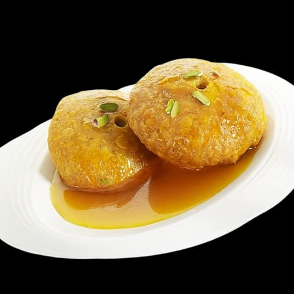
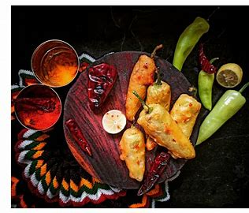
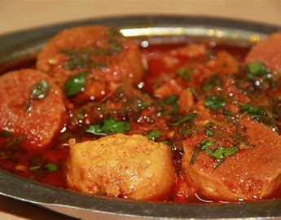
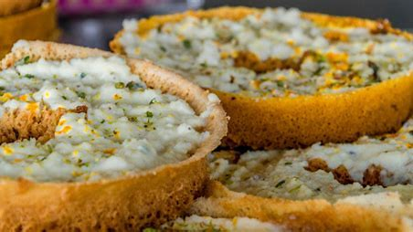

Welcome to a journey through the unique culinary traditions of Jodhpur. Explore the distinctive flavors, ingredients, and dishes that are integral to the Blue City's rich gastronomic heritage.

Mawa Kachori is a delectable sweet treat from Jodhpur, made by stuffing a deep-fried pastry with rich khoya (milk solids), nuts, and cardamom. The outer layer is crisp, while the filling is sweet and aromatic. This dessert is a popular choice during festivals like Diwali and Holi, symbolizing celebration and joy.
The origins of Mawa Kachori can be traced back to the royal kitchens of Rajasthan, where it was first prepared as a special treat for royal families and guests. Over time, it became a beloved dessert across the region, often prepared during major festivals and celebrations. The use of khoya and nuts reflects the rich and opulent culinary traditions of Rajasthan.

Mirchi Bada features green chilies stuffed with a spicy potato mixture, coated in a gram flour batter, and deep-fried until golden brown. This savory snack offers a delightful combination of heat and tanginess and is commonly served with tamarind chutney or yogurt. It's a staple at street food stalls and family gatherings in Jodhpur.
Mirchi Bada has its roots in the vibrant street food culture of Jodhpur. It originated as a way to utilize surplus green chilies in a flavorful and spicy snack. The dish quickly gained popularity for its bold flavors and crispy texture, making it a favorite among locals and visitors alike. Over the years, it has become synonymous with Jodhpur's bustling food scene.

Gatte Ki Sabji is a traditional Rajasthani curry made from gram flour dumplings cooked in a spicy yogurt-based gravy. This vegetarian dish is known for its rich flavors and unique texture, with the gatte (dumplings) absorbing the aromatic spices of the curry. It's often enjoyed with rice or roti.
Gatte Ki Sabji is a quintessential dish of Rajasthan, reflecting the resourceful use of gram flour in a region with limited access to fresh vegetables. The dish has been a staple in Rajasthani cuisine for centuries, showcasing the local culinary tradition of creating hearty and flavorful dishes with minimal ingredients. Its enduring popularity is a testament to its rich heritage and taste.

Malai Ghewar is a festive Rajasthani dessert made from flour, sugar, and milk, layered with cream and garnished with nuts. This honeycomb-like sweet is crispy on the outside and soft on the inside, making it a popular treat during festivals such as Teej and Raksha Bandhan. Its intricate preparation and rich flavors make it a standout dish in Jodhpur's culinary landscape.
Malai Ghewar has its origins in the royal kitchens of Rajasthan, where it was crafted for special occasions and festivals. Its intricate preparation reflects the rich culinary traditions of the region, with each layer of cream and honeycomb-like texture representing the opulence of royal feasts. It remains a cherished dessert in Rajasthani culture, particularly during major celebrations.